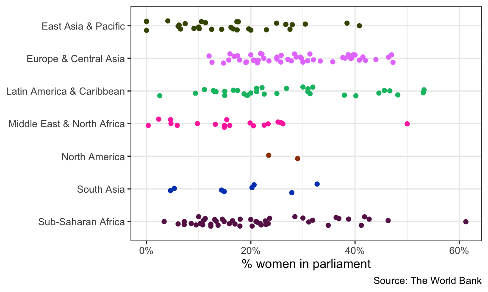

Code
library(tidyverse) # For ggplot, dplyr, and friends
library(WDI) # Get data from the World Bank
library(scales) # For nicer label formatting
library(plotly) # For easy interactive plotsFor this example we’ll use data from the World Bank once again, which we download using the {WDI} package.
If you want to skip the data downloading, you can download the data below (you’ll likely need to right click and choose “Save Link As…”):
There is no video for this one, since it really only involves feeding a few ggplot plots fed into ggplotly().
First, we load the libraries we’ll be using:
library(tidyverse) # For ggplot, dplyr, and friends
library(WDI) # Get data from the World Bank
library(scales) # For nicer label formatting
library(plotly) # For easy interactive plotsindicators <- c(population = "SP.POP.TOTL", # Population
prop_women_parl = "SG.GEN.PARL.ZS", # Proportion of seats held by women in national parliaments (%)
gdp_per_cap = "NY.GDP.PCAP.KD") # GDP per capita
wdi_parl_raw <- WDI(country = "all", indicators, extra = TRUE,
start = 2000, end = 2019)Then we clean the data by removing non-country countries:
wdi_clean <- wdi_parl_raw |>
filter(region != "Aggregates")Let’s make a chart that shows the distribution of the proportion of women in national parliaments in 2019, by continent. We’ll use a strip plot with jittered points.
First we need to make a regular static plot with ggplot:
wdi_2019 <- wdi_clean |>
filter(year == 2019) |>
drop_na(prop_women_parl) |>
# Scale this down from 0-100 to 0-1 so that scales::label_percent() can format
# it as an actual percent
mutate(prop_women_parl = prop_women_parl / 100)
static_plot <- ggplot(wdi_2019,
aes(y = fct_rev(region), x = prop_women_parl, color = region)) +
geom_point(position = position_jitter(width = 0, height = 0.15, seed = 1234)) +
guides(color = "none") +
scale_x_continuous(labels = label_percent()) +
# I used https://medialab.github.io/iwanthue/ to generate these colors
scale_color_manual(values = c("#425300", "#e680ff", "#01bd71", "#ff3aad",
"#9f3e00", "#0146bf", "#671d56")) +
labs(x = "% women in parliament", y = NULL, caption = "Source: The World Bank") +
theme_bw()
static_plot
Great! That looks pretty good.
To make it interactive, all we have to do is feed the static_plot object into ggplotly(). That’s it.
ggplotly(static_plot)Not everything translates over to JavaScript—the caption is gone now, and the legend is back (which is fine, I guess, since the legend is interactive). But still, this is magic.
Right now, the default tooltip you see when you hover over the points includes the actual proportion of women in parliament for each point, along with the continent, which is neat, but it’d be great if we could see the country name too. The tooltip picks up the information to include from the variables we use in aes(), and we never map the country column to any aesthetic, so it doesn’t show up.
To get around this, we can add a new aesthetic for country to the points. Instead of using one of the real ggplot aesthetics like color or fill, we’ll use a fake one called text (we can call it whatever we want! asdf would also work). ggplot has no idea how to do anything with the text aesthetic, and it’ll give you a warning, but that’s okay. The static plot looks the same:
static_plot_toolip <- ggplot(wdi_2019,
aes(y = fct_rev(region), x = prop_women_parl, color = region)) +
geom_point(aes(text = country),
position = position_jitter(width = 0, height = 0.15, seed = 1234)) +
guides(color = "none") +
scale_x_continuous(labels = label_percent()) +
# I used https://medialab.github.io/iwanthue/ to generate these colors
scale_color_manual(values = c("#425300", "#e680ff", "#01bd71", "#ff3aad",
"#9f3e00", "#0146bf", "#671d56")) +
labs(x = "% women in parliament", y = NULL, caption = "Source: The World Bank") +
theme_bw()
## Warning in geom_point(aes(text = country), position = position_jitter(width = 0, : Ignoring unknown aesthetics: text
static_plot_toolip
Now we can tell plotly to use this fake text aesthetic for the tooltip:
ggplotly(static_plot_toolip, tooltip = "text")Now we should just see the country names in the tooltips!
We have country names, but we lost the values in the x-axis. Rwanda has the highest proportion of women in parliament, but what’s the exact number? It’s somewhere above 60%, but that’s all we can see now.
To fix this, we can make a new column in the data with all the text we want to include in the tooltip. We’ll use paste0() to combine text and variable values to make the tooltip follow this format:
Name of country
X% women in parliamentLet’s add a new column with mutate(). A couple things to note here:
The <br> is HTML code for a line break
We use the label_percent() function to format numbers as percents. The accuracy argument tells R how many decimal points to use. If we used 1, it would say 12%; if we used 0.01, it would say 12.08%; etc.
wdi_2019 <- wdi_clean |>
filter(year == 2019) |>
drop_na(prop_women_parl) |>
# Scale this down from 0-100 to 0-1 so that scales::label_percent() can format
# it as an actual percent
mutate(prop_women_parl = prop_women_parl / 100) |>
mutate(fancy_label = paste0(country, "<br>",
label_percent(accuracy = 0.1)(prop_women_parl),
" women in parliament"))Let’s check to see if it worked:
wdi_2019 |> select(country, prop_women_parl, fancy_label) |> head()
## # A tibble: 6 × 3
## country prop_women_parl fancy_label
## <chr> <dbl> <chr>
## 1 Afghanistan 0.279 Afghanistan<br>27.9% women in parliament
## 2 Albania 0.295 Albania<br>29.5% women in parliament
## 3 Algeria 0.258 Algeria<br>25.8% women in parliament
## 4 Andorra 0.464 Andorra<br>46.4% women in parliament
## 5 Angola 0.3 Angola<br>30.0% women in parliament
## 6 Antigua and Barbuda 0.111 Antigua and Barbuda<br>11.1% women in parliamentNow instead of using text = country we’ll use text = fancy_label to map that new column onto the plot. Again, this won’t be visible in the static plot (and you’ll get a warning), but it will show up in the interactive plot.
static_plot_toolip_fancy <- ggplot(wdi_2019,
aes(y = fct_rev(region),
x = prop_women_parl,
color = region)) +
geom_point(aes(text = fancy_label),
position = position_jitter(width = 0, height = 0.15, seed = 1234)) +
guides(color = "none") +
scale_x_continuous(labels = label_percent()) +
# I used https://medialab.github.io/iwanthue/ to generate these colors
scale_color_manual(values = c("#425300", "#e680ff", "#01bd71", "#ff3aad",
"#9f3e00", "#0146bf", "#671d56")) +
labs(x = "% women in parliament", y = NULL, caption = "Source: The World Bank") +
theme_bw()
## Warning in geom_point(aes(text = fancy_label), position = position_jitter(width = 0, : Ignoring unknown aesthetics: textggplotly(static_plot_toolip_fancy, tooltip = "text")Perfect!
Finally, if we want to save this plot as a standalone self-contained HTML file, we can use the saveWidget() function from the {htmlwidgets} package.
# This is like ggsave, but for interactive HTML plots
interactive_plot <- ggplotly(static_plot_toolip_fancy, tooltip = "text")
htmlwidgets::saveWidget(interactive_plot, "fancy_plot.html")The documentation for Quarto Dashboards is pretty comprehensive and easy to follow. Visit and read these pages to see how they work:
Watch this video by one of the developers of Quarto to see a demonstration of how to make one: